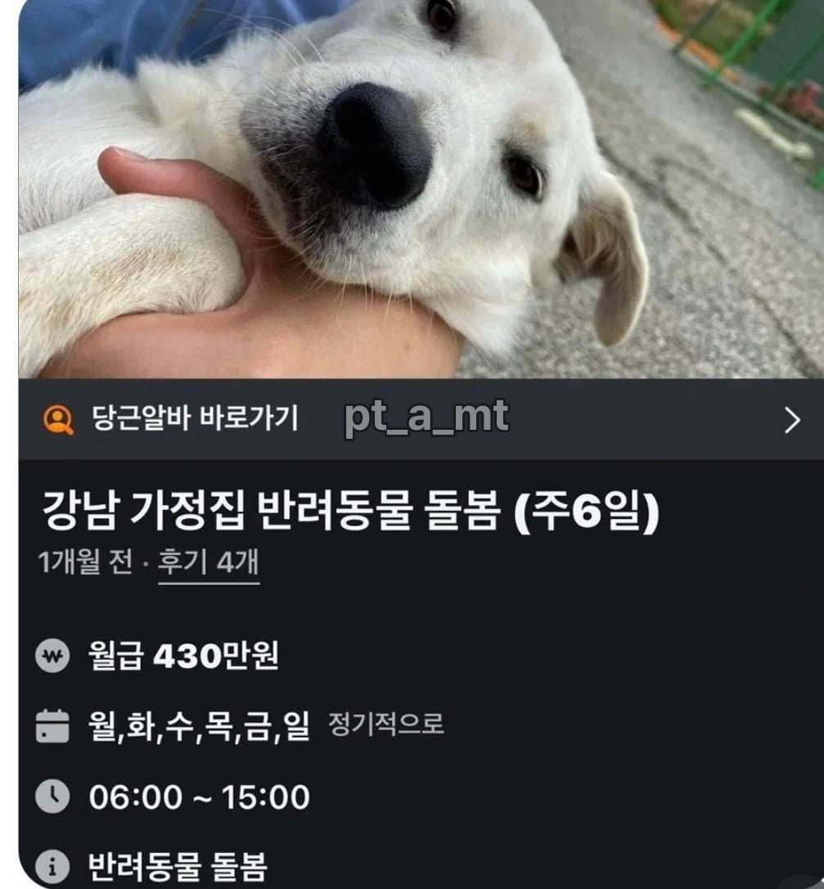
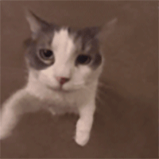

캬 시발

캬 시발
저정도 돈이면 상전으로 모셔야지 임마
뷰지라도 핥아라
상전 뷰지를 왜핥아 미친놈아
강보핥은 개드립의 전통임
자지일수도 있어
그건 돈내야 하는거 아니에요?
개붕이 최적화 알바 발견!

개붕이들이 딱이네
잘 찾아오셨습니다
여기가 개드립입니다
강보핡
06시부터 시작이면 아침밥 차려줘야 하나
새벽 배변산책부터 시작일 듯
저런거 보고 가면 납치 되는거아니냐
놉 9마리 차례대로 산책시켜야함 간사람 후기있음
1시간에 1마리씩이구나.
9시간 걸어야하네 ㅋㅋ
생각보다 괜찮은데 집에서 가까우면
저거 대형견 6마리인가 9마리인가 라고 들었는데
저희 개는 존나 물어요
후기가 4개나 있어
갔더니 개만 30마리 인거 아니냐
하렘임?
가면 위험해
개가 울프독인듯 ㅋㅋㅋ
몇마리?
주 6일 9시간 근무에 윗댓처럼 대형견 여러마리면 힘들어 뒤질듯 ㅋㅋ
힘들어뒤져도 월급430이면 ㅋㅋㅋㅋㅋ
도전
저러면 일관둘 때 개가 알바 따라나서는 거 아니냐? 생활을 거의 알바랑하는데?
알바 없이 못살게 만들어야 월급 인상 협상시 유리함
재계약할 때, 강아지한테 간식주면서 도와달라고 해야지
빡세니까 많이 주겄지 ㅋㅋ
6일이 빡센데 돈을 저렇게준다해도
430이면 할만한데..
잠 안 자는 3살짜리 아이를 9시간 동안 돌본다고 생각해보면
존나 빡세보임
대형견 9마리 1마리씩 1시간 산책 루틴 같은거면 생각보다 조건에 맞는사람이 많진 않을거임
얼마나 상전모시기일지 두려운데